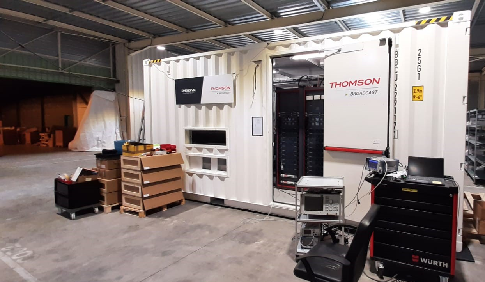

OB vans and system integration
UAE-focused mobile production delivery
Built around new OB vans, refurbishment, engineering integration, MCR and playout workflows, the UAE operation is positioned to convert international reference depth into regional delivery capability.